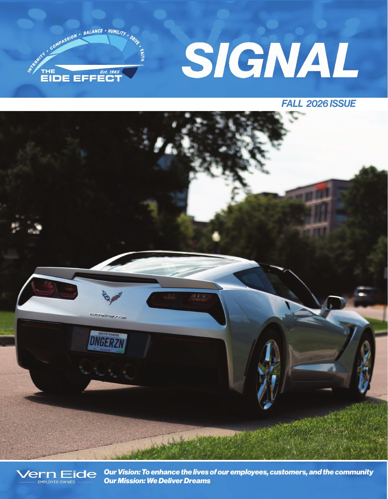

Fall 2026 · Current issue
Driven by stories.
The people, vehicles and community moments that make Vern Eide more than a place to work. Meet Joe Bruggeman and the 2014 Corvette Stingray that continues a passion spanning more than forty years.

Inside Fall 2026
Latest stories
The next story could be yours
Signal your story.
Know a person, team, community moment or unforgettable vehicle that deserves a place in The Signal? Send us the spark. We will help turn it into a story.
See how submissions work →Read the current issue
Fall 2026
Open the cover, then drag a page with your mouse or finger, or use the arrows and keyboard, to view every page.